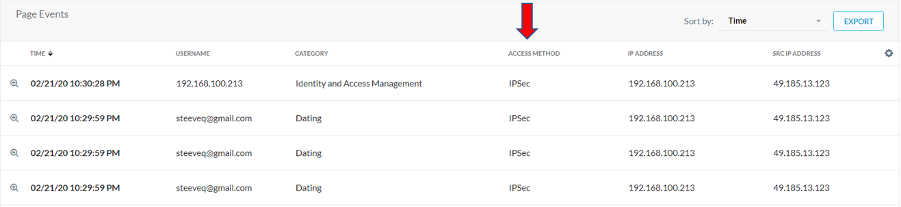
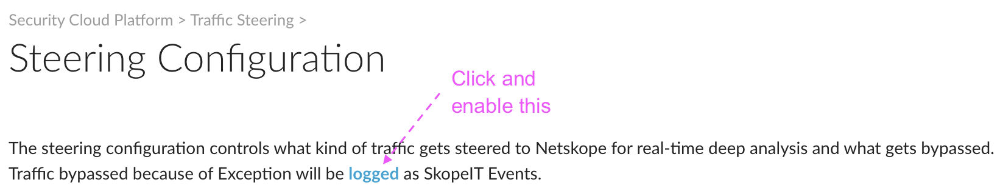
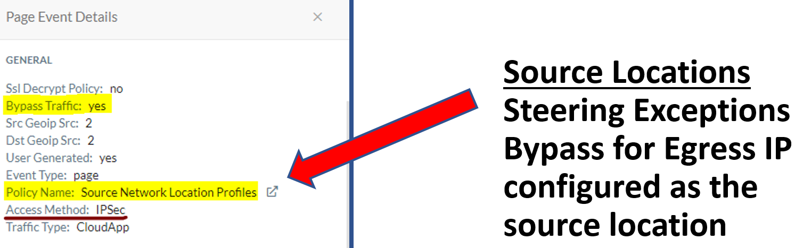
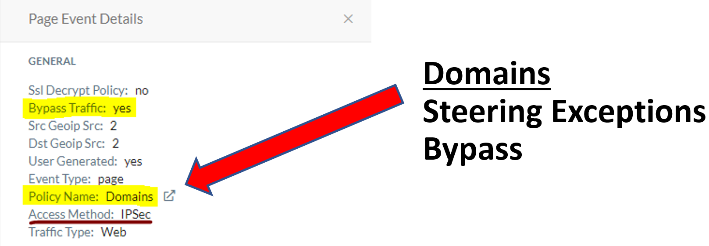
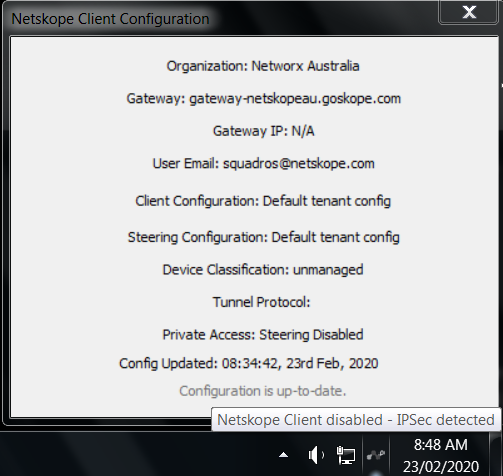
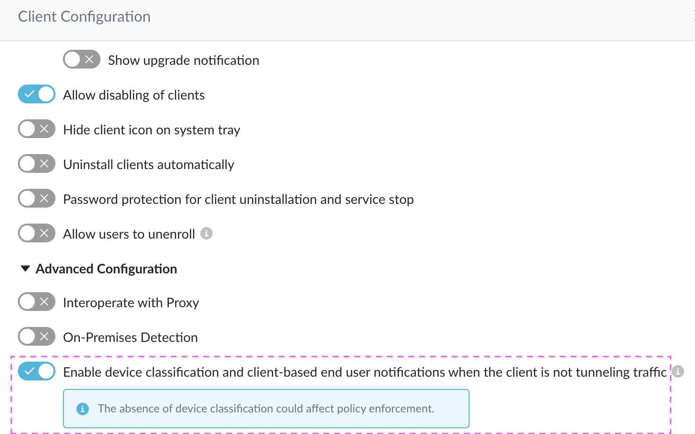

Tips and FAQs
Netskope SAML FP Session Behavior
Netskope SAML Forward Proxy maintains IP to User session mappings and auth tokens. The settings for the IP to User mapping is a global setting that applies to all tenants. The auth tokens can be customized per tenant from 1 to 180days (default is 7 days). Other factors include:
Netskope uses a hybrid of NS Auth cookies and User to IP mappings to identify users.
Netskope maintains a IP session cache for 24 hours. After each 24 hours, the Netskope cookie is revalidated.
Netskope Auth cookies have a 7 day expiry. So no re-auth is required during this 7 day period.
There is also cookie based authentication which stores cookies in the browser. This use case is mostly for devices behind an Internal NAT, but it can also be used for Citrix XenApp hosted environments where multiple users log onto the same server concurrently.
How do I check if traffic is coming from IPSec/GRE in SkopeIT?
You can add the Access Method column and check for IPSec or GRE.
|  |
 |
Why does IPSec/GRE show IP Address instead of my username?
IPSec/GRE displays the IP Address in these scenarios:
SAML Authentication is not enabled.
Device classification has not been enabled under client configurations for the Netskope Client.

Can IPSec/GRE be configured to display usernames or support user authentication?
Yes, IPSec/GRE can display usernames and supports user authentication as well. There are a couple of ways this can be achieved:
Configure SAML Auth with IDP for IPSec/GRE.
On-board users into the Netskope tenant using Directory Importer or SCIM integration, and then deploy the Netskope Client to endpoints to provide user identity via IPSec/GRE.
Is it necessary to provision users into the Netskope tenant for IPSec/GRE?
No, it is not required to provision users into the tenant if you only want to authenticate users to capture user identity for traffic within the tenant. However, it is strongly recommended to provision users and groups into the tenant.
These limitations apply if users are not provisioned:
You will not be able to assign policies to specific users or groups.
Real-time policies will apply to all users but have the option to filter based on Source Locations (User IP). This may not be feasible for most organization's devices use DHCP and the IP may change.
Does IPSec/GRE support SSL Decryption Bypass policies?
Yes, IPSec/GRE supports SSL Decryption Bypass policies.
This can be applied to certain criteria like Domains, Categories (Predefined / Custom) and Source Locations (User / Egress IP) and also with combinations of these matching criteria.
Note
Users/Groups/OU criteria is also supported in SSL Decryption policy for traffic steered via IPSec/GRE when a user is authenticated via the Netskope SAML Forward Proxy.
Does IPSec/GRE support Advanced DLP and Advanced Threat Protection?
Yes.
Does IPSec/GRE support Steering Exceptions?
Yes, IPSec/GRE supports Steering Exceptions for Source Locations (Egress IP), Domains, Category (Pre-defined or Custom), Destination Locations, and Source Countries. Steering Exceptions will bypass at the proxy, bypass all Real-time and threat policies, as well as SSL bypass.
Does IPSec/GRE support multiple Steering Exception configurations?
Yes, multiple steering configurations are supported when user is authenticated via the Netskope SAML Forward Proxy. If SAML Forward Proxy is disabled, or a user is not authenticated, then the Default Steering Config will apply to the user/endpoints.
Does IPSec/GRE support Certificate-Pinned Steering Exceptions?
No, IPSec/GRE cannot identify if an application is accessed via Browser or Native application, so certificate-pinned applications in steering exceptions are not supported.
If you have IPSec/GRE to steer traffic to the Netskope cloud proxy, then there is no option available to only bypass native apps and still inspect browser-based access.
Do Steering Exception events gets logged with IPSec/GRE?
Yes, they are displayed under Skope IT > Page Events.
|  |
|  |
|  |
Is SNI error settings supported on IPSec/GRE?
Yes. Below are some of the SNI error messages that get displayed in the browsers.
 |
 |
Note
If an SSL Decryption policy or a Steering Exception has been configured for the Source IP, Category, or Domain, then SNI Errors settings will not be applied because traffic is not intercepted to check for any SNI Error rules.
Will the Netskope Client disable itself when detecting IPSec/GRE?
Yes, when Netskope Client detects a network change (e.g. LAN to Wi-fi) , a Client service restart, or device power-on/reboot, the Client will check for other steering methods and disable itself if it detects IPSec/GRE. The achecker-<tenant URL> needs to be steered to IPSec/GRE for the Client to detect and disable itself.
|  |
Can the Netskope Client provide user identity to IPSec/GRE?
Yes, in the tenant UI under Settings > Devices > Client Configurations, you need to enable Enable device classification and client-based end user notifications when the Client is not tunneling traffic. This applies to email invite, IdP mode, single user, and multi-user mode.
|  |
Note
Local accounts are not supported in multi-user mode; the Client will remain disabled and will not provide user identity.
Will a user get prompted for authentication if the Netskope Client has been installed and steered to IPSec/GRE with Forward Proxy SAML Auth enabled?
No, the Client provides the user identity and will not prompt user for authentication.
Does device classification (managed/unmanaged) work with Netskope Client and IPSec/GRE?
No.
How can I steer traffic to IPSec/GRE tunnel?
There are two options to steer traffic to IPSec/GRE tunnel:
Policy-based routing.
Using a PAC file. Configure One IP / Port traffic to be routed to the IPSec/GRE tunnel.